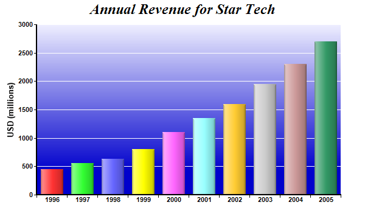

This example demonstrates using soft lighting effect for bars and gradient color for plot area background. It also demonstrates putting axis ticks in between axis labels, as opposed to at the axis labels.
Soft lighting is a special shading effect that look like gradient coloring. In this example, soft lighting effect is applied to the bars with the light coming from the left direction.
See
Soft Multi-Bar Chart for another example of soft lighting effect with the light coming from the top direction.
The following is the command line version of the code in "cppdemo/softlightbar". The MFC version of the code is in "mfcdemo/mfcdemo". The Qt Widgets version of the code is in "qtdemo/qtdemo". The QML/Qt Quick version of the code is in "qmldemo/qmldemo".
#include "chartdir.h"
int main(int argc, char *argv[])
{
// The data for the bar chart
double data[] = {450, 560, 630, 800, 1100, 1350, 1600, 1950, 2300, 2700};
const int data_size = (int)(sizeof(data)/sizeof(*data));
// The labels for the bar chart
const char* labels[] = {"1996", "1997", "1998", "1999", "2000", "2001", "2002", "2003", "2004",
"2005"};
const int labels_size = (int)(sizeof(labels)/sizeof(*labels));
// Create a XYChart object of size 600 x 360 pixels
XYChart* c = new XYChart(600, 360);
// Add a title to the chart using 18pt Times Bold Italic font
c->addTitle("Annual Revenue for Star Tech", "Times New Roman Bold Italic", 18);
// Set the plotarea at (60, 40) and of size 500 x 280 pixels. Use a vertical gradient color from
// light blue (eeeeff) to deep blue (0000cc) as background. Set border and grid lines to white
// (ffffff).
c->setPlotArea(60, 40, 500, 280, c->linearGradientColor(60, 40, 60, 280, 0xeeeeff, 0x0000cc),
-1, 0xffffff, 0xffffff);
// Add a multi-color bar chart layer using the supplied data. Use soft lighting effect with
// light direction from left.
c->addBarLayer(DoubleArray(data, data_size), IntArray(0, 0))->setBorderColor(Chart::Transparent,
Chart::softLighting(Chart::Left));
// Set x axis labels using the given labels
c->xAxis()->setLabels(StringArray(labels, labels_size));
// Draw the ticks between label positions (instead of at label positions)
c->xAxis()->setTickOffset(0.5);
// Add a title to the y axis with 10pt Arial Bold font
c->yAxis()->setTitle("USD (millions)", "Arial Bold", 10);
// Set axis label style to 8pt Arial Bold
c->xAxis()->setLabelStyle("Arial Bold", 8);
c->yAxis()->setLabelStyle("Arial Bold", 8);
// Set axis line width to 2 pixels
c->xAxis()->setWidth(2);
c->yAxis()->setWidth(2);
// Output the chart
c->makeChart("softlightbar.png");
//free up resources
delete c;
return 0;
}
© 2023 Advanced Software Engineering Limited. All rights reserved.